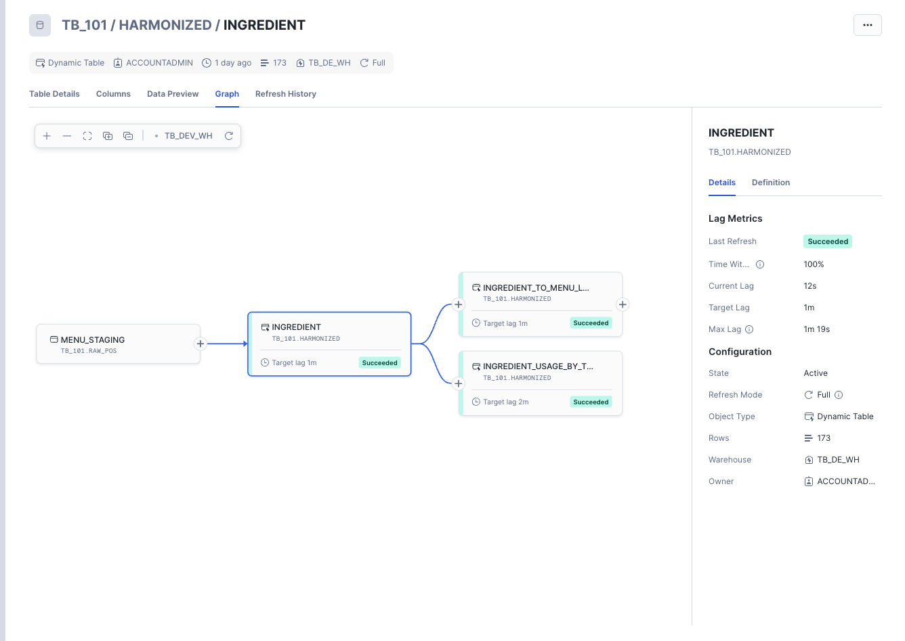
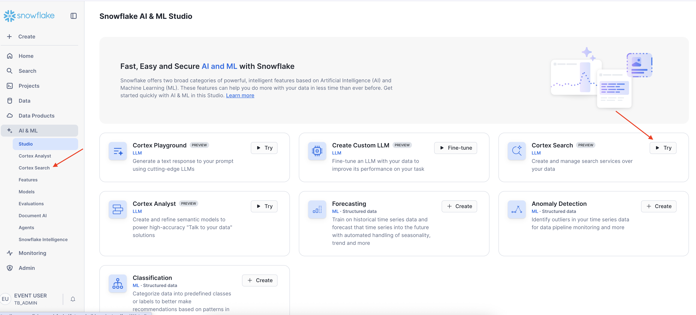
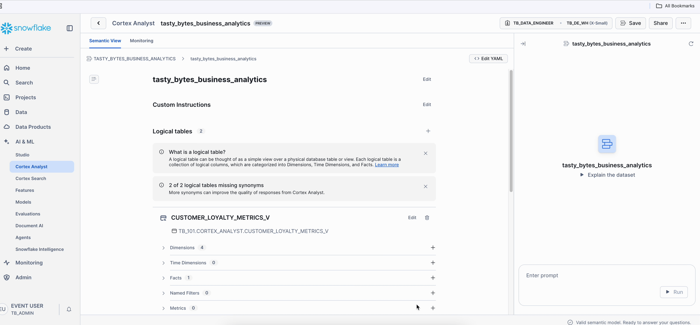
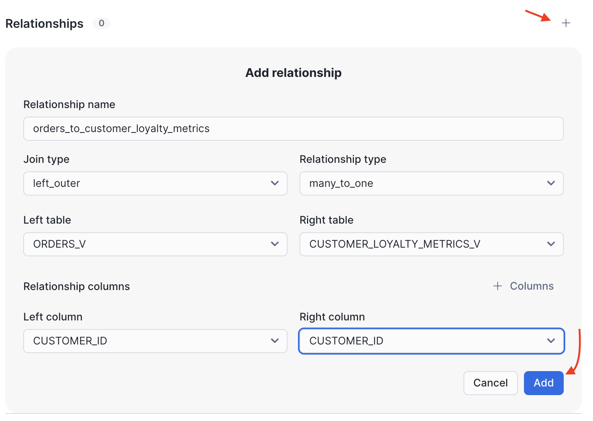
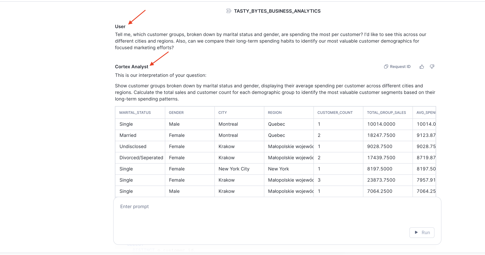

Overview
Welcome to the Zero to Snowflake Quickstart! This guide is a consolidated journey through key areas of the Snowflake AI Data Cloud. You will start with the fundamentals of warehousing and data transformation, build an automated data pipeline, then see how you can experiment with LLMs using the Cortex Playground to compare different models for summarizing text, use AISQL Functions to instantly analyze customer review sentiment with a simple SQL command, and harness Cortex Search for intelligent text discovery, and utilize Cortex Analyst for conversational business intelligence. Finally, you will learn to secure your data with powerful governance controls and enrich your analysis through seamless data collaboration.
We'll apply these concepts using a sample dataset from our fictitious food truck, Tasty Bytes, to improve and streamline their data operations. We'll explore this dataset through several workload-specific scenarios, demonstrating the benefits Snowflake provides to businesses.
Who is Tasty Bytes?

Our mission is to provide unique, high-quality food options in a convenient and cost-effective manner, emphasizing the use of fresh ingredients from local vendors. Their vision is to become the largest food truck network in the world with a zero carbon footprint.
Prerequisites
- A Supported Snowflake Browser
- An Enterprise or Business Critical Snowflake Account
- If you do not have a Snowflake Account, please sign up for a Free 30 Day Trial Account. When signing up, please make sure to select Enterprise edition. You are welcome to choose any Snowflake Cloud/Region.
- After registering, you will receive an email with an activation link and your Snowflake Account URL.
- For Snowflake Cortex AI Features: This lab may demonstrate features that utilize Snowflake Cortex AI, and some Cortex AI models are region-specific. If the features or models required for this lab are not available in your Snowflake account's primary region, you will need to enable cross-region inference. To enable this, an
ACCOUNTADMINrole must execute the following SQL command in a Snowflake worksheet:
ALTER ACCOUNT SET CORTEX_ENABLED_CROSS_REGION = 'AWS_US';
- Simply copy and paste the line above into a SQL worksheet and run it while logged in with the
ACCOUNTADMINrole.
What You Will Learn
- Vignette 1: Getting Started with Snowflake: The fundamentals of Snowflake warehouses, caching, cloning, and Time Travel.
- Vignette 2: Simple Data Pipelines: How to ingest and transform semi-structured data using Dynamic Tables.
- Vignette 3: Snowflake Cortex AI: How to leverage Snowflake's comprehensive AI capabilities for experimentation, scalable analysis, AI-assisted development, and conversational business intelligence.
- Vignette 4: Governance with Horizon: How to protect your data with roles, classification, masking, and row-access policies.
- Vignette 5: Apps & Collaboration: How to leverage the Snowflake Marketplace to enrich your internal data with third-party datasets.
What You Will Build
- A comprehensive understanding of the core Snowflake platform.
- Configured Virtual Warehouses.
- An automated ELT pipeline with Dynamic Tables.
- A complete intelligence customer analytics platform leveraging Snowflake AI.
- A robust data governance framework with roles and policies.
- Enriched analytical views combining first- and third-party data.
Overview
In this Quickstart, we will use Snowflake Workspaces to organize, edit, and run all the SQL scripts required for this course. We will create a dedicated SQL worksheet for the setup and each vignette. This will keep our code organized and easy to manage.
Let's walk through how to create your first worksheet, add the necessary setup code, and run it.
Step 1 - Create Your Setup Worksheet
First, we need a place to put our setup script.
- Navigate to Workspaces: In the left-hand navigation menu of the Snowflake UI, click on Projects » Workspaces. This is the central hub for all your worksheets.
- Create a New Worksheet: Find and click the + Add New button in the top-left corner of the Workspaces area, then select SQL File. This will generate a new, blank worksheet.
- Rename the Worksheet: Your new worksheet will have a name based on the timestamp it was created. Give it a descriptive name like Zero To Snowflake - Setup.
Step 2 - Add and Run the Setup Script
Now that you have your worksheet, it's time to add the setup SQL and execute it.
- Copy the SQL Code: Click the link for the setup file and copy it to your clipboard.
- Paste into your Worksheet: Return to your Zero To Snowflake Setup worksheet in Snowflake and paste the entire script into the editor.
- Run the Script: To execute all the commands in the worksheet sequentially, click the "Run All" button located at the top-left of the worksheet editor. This will perform all the necessary setup actions, such as creating roles, schemas, and warehouses that you will need for the upcoming vignettes.

Looking Ahead
The process you just completed for creating a new worksheet is the exact same workflow you will use for every subsequent vignette in this course.
For each new vignette, you will:
- Create a new worksheet.
- Give it a descriptive name (e.g., Vignette 1 - Getting Started with Snowflake).
- Copy and paste the SQL script for that specific vignette.
- Each SQL file has all of the necessary instructions and commands to follow along.

Overview
Within this Vignette, we will learn about core Snowflake concepts by exploring Virtual Warehouses, using the query results cache, performing basic data transformations, leveraging data recovery with Time Travel, and monitoring our account with Resource Monitors and Budgets.
What You Will Learn
- How to create, configure, and scale a Virtual Warehouse.
- How to leverage the Query Result Cache.
- How to use Zero-Copy Cloning for development.
- How to transform and clean data.
- How to instantly recover a dropped table using UNDROP.
- How to create and apply a Resource Monitor.
- How to create a Budget to monitor costs.
- How to use Universal Search to find objects and information.
What You Will Build
- A Snowflake Virtual Warehouse
- A development copy of a table using Zero-Copy Clone
- A Resource Monitor
- A Budget
Get the SQL and paste it into your Worksheet.
Copy and paste the SQL from this file in a new Worksheet to follow along in Snowflake. Note that once you've reached the end of the Worksheet you can skip to Step 10 - Simple Data Pipeline
Overview
Virtual Warehouses are the dynamic, scalable, and cost-effective computing power that lets you perform analysis on your Snowflake data. Their purpose is to handle all your data processing needs without you having to worry about the underlying technical details.
Step 1 - Setting Context
First, lets set our session context. To run the queries, highlight the three queries at the top of your worksheet and click the "► Run" button.
ALTER SESSION SET query_tag = '{"origin":"sf_sit-is","name":"tb_zts,"version":{"major":1, "minor":1},"attributes":{"is_quickstart":1, "source":"tastybytes", "vignette": "getting_started_with_snowflake"}}';
USE DATABASE tb_101;
USE ROLE accountadmin;
Step 2 - Creating a Warehouse
Let's create our first warehouse! This command creates a new X-Small warehouse that will initially be suspended.
CREATE OR REPLACE WAREHOUSE my_wh
COMMENT = 'My TastyBytes warehouse'
WAREHOUSE_TYPE = 'standard'
WAREHOUSE_SIZE = 'xsmall'
MIN_CLUSTER_COUNT = 1
MAX_CLUSTER_COUNT = 2
SCALING_POLICY = 'standard'
AUTO_SUSPEND = 60
INITIALLY_SUSPENDED = true
AUTO_RESUME = false;
Virtual Warehouses: A virtual warehouse, often referred to simply as a "warehouse", is a cluster of compute resources in Snowflake. Warehouses are required for queries, DML operations, and data loading. For more information, see the Warehouse Overview.
Step 3 - Using and Resuming a Warehouse
Now that we have a warehouse, we must set it as the active warehouse for our session. Execute the next statement.
USE WAREHOUSE my_wh;
If you try to run the query below, it will fail, because the warehouse is suspended and does not have AUTO_RESUME enabled.
SELECT * FROM raw_pos.truck_details;
Let's resume it and set it to auto-resume in the future.
ALTER WAREHOUSE my_wh RESUME;
ALTER WAREHOUSE my_wh SET AUTO_RESUME = TRUE;
Now, try the query again. It should execute successfully.
SELECT * FROM raw_pos.truck_details;
Step 4 - Scaling a Warehouse
Warehouses in Snowflake are designed for elasticity. We can scale our warehouse up on the fly to handle a more intensive workload. Let's scale our warehouse to an X-Large.
ALTER WAREHOUSE my_wh SET warehouse_size = 'XLarge';
With our larger warehouse, let's run a query to calculate total sales per truck brand.
SELECT
o.truck_brand_name,
COUNT(DISTINCT o.order_id) AS order_count,
SUM(o.price) AS total_sales
FROM analytics.orders_v o
GROUP BY o.truck_brand_name
ORDER BY total_sales DESC;
Overview
This is a great place to demonstrate another powerful feature in Snowflake: the Query Result Cache. When you first ran the ‘sales per truck' query, it likely took several seconds. If you run the exact same query again, the result will be nearly instantaneous. This is because the query results were cached in Snowflake's Query Result Cache.
Step 1 - Re-running a Query
Run the same ‘sales per truck' query from the previous step. Note the execution time in the query details pane. It should be much faster.
SELECT
o.truck_brand_name,
COUNT(DISTINCT o.order_id) AS order_count,
SUM(o.price) AS total_sales
FROM analytics.orders_v o
GROUP BY o.truck_brand_name
ORDER BY total_sales DESC;

Query Result Cache: Results are retained for any query for 24 hours. Hitting the result cache requires almost no compute resources, making it ideal for frequently run reports or dashboards. The cache resides in the Cloud Services Layer, making it globally accessible to all users and warehouses in the account. For more information, please visit the documentation on using persisted query results.
Step 2 - Scaling Down
We will now be working with smaller datasets, so we can scale our warehouse back down to an X-Small to conserve credits.
ALTER WAREHOUSE my_wh SET warehouse_size = 'XSmall';
Overview
In this section, we will see some basic transformation techniques to clean our data and use Zero-Copy Cloning to create development environments. Our goal is to analyze the manufacturers of our food trucks, but this data is currently nested inside a VARIANT column.
Step 1 - Creating a Development Table with Zero-Copy Clone
First, let's take a look at the truck_build column.
SELECT truck_build FROM raw_pos.truck_details;
This table contains data about the make, model and year of each truck, but it is nested, or embedded in a special data type called a VARIANT. We can perform operations on this column to extract these values, but first we'll create a development copy of the table.
Let's create a development copy of our truck_details table. Snowflake's Zero-Copy Cloning lets us create an identical, fully independent copy of the table instantly, without using additional storage.
CREATE OR REPLACE TABLE raw_pos.truck_dev CLONE raw_pos.truck_details;
Zero-Copy Cloning: Cloning creates a copy of a database object without duplicating the storage. Changes made to either the original or the clone are stored as new micro-partitions, leaving the other object untouched.
Step 2 - Adding New Columns and Transforming Data
Now that we have a safe development table, let's add columns for year, make, and model. Then, we will extract the data from the truck_build VARIANT column and populate our new columns.
-- Add new columns
ALTER TABLE raw_pos.truck_dev ADD COLUMN IF NOT EXISTS year NUMBER;
ALTER TABLE raw_pos.truck_dev ADD COLUMN IF NOT EXISTS make VARCHAR(255);
ALTER TABLE raw_pos.truck_dev ADD COLUMN IF NOT EXISTS model VARCHAR(255);
-- Extract and update data
UPDATE raw_pos.truck_dev
SET
year = truck_build:year::NUMBER,
make = truck_build:make::VARCHAR,
model = truck_build:model::VARCHAR;
Step 3 - Cleaning the Data
Let's run a query to see the distribution of truck makes.
SELECT
make,
COUNT(*) AS count
FROM raw_pos.truck_dev
GROUP BY make
ORDER BY make ASC;
Did you notice anything odd about the results from the last query? We can see a data quality issue: ‘Ford' and ‘Ford_' are being treated as separate manufacturers. Let's easily fix this with a simple UPDATE statement.
UPDATE raw_pos.truck_dev
SET make = 'Ford'
WHERE make = 'Ford_';
Here we're saying we want to set the row's make value to Ford wherever it is Ford_. This will ensure none of the Ford makes have the underscore, giving us a unified make count.
Step 4 - Promoting to Production with SWAP
Our development table is now cleaned and correctly formatted. We can instantly promote it to be the new production table using the SWAP WITH command. This atomically swaps the two tables.
ALTER TABLE raw_pos.truck_details SWAP WITH raw_pos.truck_dev;
Step 5 - Cleanup
Now that the swap is complete, we can drop the unnecessary truck_build column from our new production table. We also need to drop the old production table, which is now named truck_dev. But for the sake of the next lesson, we will "accidentally" drop the main table.
ALTER TABLE raw_pos.truck_details DROP COLUMN truck_build;
-- Accidentally drop the production table!
DROP TABLE raw_pos.truck_details;
Step 6 - Data Recovery with UNDROP
Oh no! We accidentally dropped the production truck_details table. Luckily, Snowflake's Time Travel feature allows us to recover it instantly. The UNDROP command restores dropped objects.
Step 7 - Verify the Drop
If you run a DESCRIBE command on the table, you will get an error stating it does not exist.
DESCRIBE TABLE raw_pos.truck_details;
Step 8 - Restore the Table with UNDROP
Let's restore the truck_details table to the exact state it was in before being dropped.
UNDROP TABLE raw_pos.truck_details;
Time Travel & UNDROP: Snowflake Time Travel enables accessing historical data at any point within a defined period. This allows for restoring data that has been modified or deleted. UNDROP is a feature of Time Travel that makes recovery from accidental drops trivial.
Step 9 - Verify Restoration and Clean Up
Verify the table was successfully restored by selecting from it. Then, we can safely drop the actual development table, truck_dev.
-- Verify the table was restored
SELECT * from raw_pos.truck_details;
-- Now drop the real truck_dev table
DROP TABLE raw_pos.truck_dev;
Overview
Monitoring compute usage is critical. Snowflake provides Resource Monitors to track warehouse credit usage. You can define credit quotas and trigger actions (like notifications or suspension) when thresholds are reached.
Step 1 - Creating a Resource Monitor
Let's create a resource monitor for my_wh. This monitor has a monthly quota of 100 credits and will send notifications at 75% and suspend the warehouse at 90% and 100% of the quota. First, ensure your role is accountadmin.
USE ROLE accountadmin;
CREATE OR REPLACE RESOURCE MONITOR my_resource_monitor
WITH CREDIT_QUOTA = 100
FREQUENCY = MONTHLY
START_TIMESTAMP = IMMEDIATELY
TRIGGERS ON 75 PERCENT DO NOTIFY
ON 90 PERCENT DO SUSPEND
ON 100 PERCENT DO SUSPEND_IMMEDIATE;
Step 2 - Applying the Resource Monitor
With the monitor created, apply it to my_wh.
ALTER WAREHOUSE my_wh
SET RESOURCE_MONITOR = my_resource_monitor;
For more information on what each configuration handles, please visit the documentation for Working with Resource Monitors.
Overview
While Resource Monitors track warehouse usage, Budgets provide a more flexible approach to managing all Snowflake costs. Budgets can track spend on any Snowflake object and notify users when a dollar amount threshold is reached.
Step 1 - Creating a Budget via SQL
Let's first create the budget object in SQL.
CREATE OR REPLACE SNOWFLAKE.CORE.BUDGET my_budget()
COMMENT = 'My Tasty Bytes Budget';
Step 2 - Budget Page in Snowsight
Let's take a look at the Budget Page on Snowsight.
Navigate to Admin » Cost Management » Budgets.

Key:
- Warehouse Context
- Cost Management Navigation
- Time Period Filter
- Key Metrics Summary
- Spend and Forecast Trend Chart
- Budget Details
Step 3 - Configuring the Budget in Snowsight
Configuring a budget is done through the Snowsight UI.
- Make sure your account role is set to
ACCOUNTADMIN. You can change this in the bottom left corner. - Click on the MY_BUDGET budget we created.
- Click Budget Details to open the Budget details panel, then click Edit in the Budget Details panel on the right.
- Set the Spending Limit to
100. - Enter a verified notification email address.
- Click + Tags & Resources and add the TB_101.ANALYTICS schema and the TB_DE_WH warehouse to be monitored.
- Click Save Changes.

For a detailed guide on Budgets, please see the Snowflake Budgets Documentation.
Overview
Universal Search allows you to easily find any object in your account, plus explore data products in the Marketplace, relevant Snowflake Documentation, and Community Knowledge Base articles.
Step 1 - Searching for an Object
Let's try it now.
- Click Search in the Navigation Menu on the left.
- Enter
truckinto the search bar. - Observe the results. You will see categories of objects on your account, such as tables and views, as well as relevant documentation.

Step 2 - Using Natural Language Search
You can also use natural language. For example, search for: Which truck franchise has the most loyal customer base? Universal search will return relevant tables and views, even highlighting columns that might help answer your question, providing an excellent starting point for analysis.


Overview
Within this vignette, we will learn how to build a simple, automated data pipeline in Snowflake. We will start by ingesting raw, semi-structured data from an external stage, and then use the power of Snowflake's Dynamic Tables to transform and enrich that data, creating a pipeline that automatically stays up-to-date as new data arrives.
What You Will Learn
- How to ingest data from an external S3 stage.
- How to query and transform semi-structured VARIANT data.
- How to use the FLATTEN function to parse arrays.
- How to create and chain Dynamic Tables.
- How an ELT pipeline automatically processes new data.
- How to visualize a pipeline using the Directed Acyclic Graph (DAG).
What You Will Build
- An external Stage for data ingestion.
- A staging table for raw data.
- A multi-step data pipeline using three chained Dynamic Tables.
Get the SQL and paste it into your Worksheet.
Copy and paste the SQL from this file in a new Worksheet to follow along in Snowflake. Note that once you've reached the end of the Worksheet you can skip to Step 16 - Snowflake Cortex AI.
Overview
Our raw menu data currently sits in an Amazon S3 bucket as CSV files. To begin our pipeline, we first need to ingest this data into Snowflake. We will do this by creating a Stage to point to the S3 bucket and then using the COPY command to load the data into a staging table.
Step 1 - Set Context
First, let's set our session context to use the correct database, role, and warehouse. Execute the first few queries in your worksheet.
ALTER SESSION SET query_tag = '{"origin":"sf_sit-is","name":"tb_zts","version":{"major":1, "minor":1},"attributes":{"is_quickstart":1, "source":"tastybytes", "vignette": "data_pipeline"}}';
USE DATABASE tb_101;
USE ROLE tb_data_engineer;
USE WAREHOUSE tb_de_wh;
Step 2 - Create Stage and Staging Table
A Stage is a Snowflake object that specifies an external location where data files are stored. We'll create a stage that points to our public S3 bucket. Then, we'll create the table that will hold this raw data.
-- Create the menu stage
CREATE OR REPLACE STAGE raw_pos.menu_stage
COMMENT = 'Stage for menu data'
URL = 's3://sfquickstarts/frostbyte_tastybytes/raw_pos/menu/'
FILE_FORMAT = public.csv_ff;
CREATE OR REPLACE TABLE raw_pos.menu_staging
(
menu_id NUMBER(19,0),
menu_type_id NUMBER(38,0),
menu_type VARCHAR(16777216),
truck_brand_name VARCHAR(16777216),
menu_item_id NUMBER(38,0),
menu_item_name VARCHAR(16777216),
item_category VARCHAR(16777216),
item_subcategory VARCHAR(16777216),
cost_of_goods_usd NUMBER(38,4),
sale_price_usd NUMBER(38,4),
menu_item_health_metrics_obj VARIANT
);
Step 3 - Copy Data into Staging Table
With the stage and table in place, let's load the data from the stage into our menu_staging table using the COPY INTO command.
COPY INTO raw_pos.menu_staging
FROM @raw_pos.menu_stage;
Overview
Snowflake excels at handling semi-structured data like JSON using its native VARIANT data type. One of the columns we ingested, menu_item_health_metrics_obj, contains JSON. Let's explore how to query it.
Step 1 - Querying VARIANT Data
Let's look at the raw JSON. Notice it contains nested objects and arrays.
SELECT menu_item_health_metrics_obj FROM raw_pos.menu_staging;
We can use special syntax to navigate the JSON structure. The colon (:) accesses keys by name, and square brackets ([]) access array elements by index. We can also cast results to explicit data types using the CAST function or the double-colon shorthand (::).
SELECT
menu_item_name,
CAST(menu_item_health_metrics_obj:menu_item_id AS INTEGER) AS menu_item_id, -- Casting using 'AS'
menu_item_health_metrics_obj:menu_item_health_metrics[0]:ingredients::ARRAY AS ingredients -- Casting using double colon (::) syntax
FROM raw_pos.menu_staging;
Step 2 - Parsing Arrays with FLATTEN
The FLATTEN function is a powerful tool for un-nesting arrays. It produces a new row for each element in an array. Let's use it to create a list of every ingredient for every menu item.
SELECT
i.value::STRING AS ingredient_name,
m.menu_item_health_metrics_obj:menu_item_id::INTEGER AS menu_item_id
FROM
raw_pos.menu_staging m,
LATERAL FLATTEN(INPUT => m.menu_item_health_metrics_obj:menu_item_health_metrics[0]:ingredients::ARRAY) i;
Overview
Our franchises are constantly adding new menu items. We need a way to process this new data automatically. For this, we can use Dynamic Tables, a powerful tool designed to simplify data transformation pipelines by declaratively defining the result of a query and letting Snowflake handle the refreshes.
Step 1 - Creating the First Dynamic Table
We'll start by creating a dynamic table that extracts all unique ingredients from our staging table. We set a LAG of ‘1 minute', which tells Snowflake the maximum amount of time this table's data can be behind the source data.
CREATE OR REPLACE DYNAMIC TABLE harmonized.ingredient
LAG = '1 minute'
WAREHOUSE = 'TB_DE_WH'
AS
SELECT
ingredient_name,
menu_ids
FROM (
SELECT DISTINCT
i.value::STRING AS ingredient_name,
ARRAY_AGG(m.menu_item_id) AS menu_ids
FROM
raw_pos.menu_staging m,
LATERAL FLATTEN(INPUT => menu_item_health_metrics_obj:menu_item_health_metrics[0]:ingredients::ARRAY) i
GROUP BY i.value::STRING
);
Step 2 - Testing the Automatic Refresh
Let's see the automation in action. One of our trucks has added a Banh Mi sandwich, which contains new ingredients for French Baguette and Pickled Daikon. Let's insert this new menu item into our staging table.
INSERT INTO raw_pos.menu_staging
SELECT
10101, 15, 'Sandwiches', 'Better Off Bread', 157, 'Banh Mi', 'Main', 'Cold Option', 9.0, 12.0,
PARSE_JSON('{"menu_item_health_metrics": [{"ingredients": ["French Baguette","Mayonnaise","Pickled Daikon","Cucumber","Pork Belly"],"is_dairy_free_flag": "N","is_gluten_free_flag": "N","is_healthy_flag": "Y","is_nut_free_flag": "Y"}],"menu_item_id": 157}');
Now, query the harmonized.ingredient table. Within a minute, you should see the new ingredients appear automatically.
-- You may need to wait up to 1 minute and re-run this query
SELECT * FROM harmonized.ingredient
WHERE ingredient_name IN ('French Baguette', 'Pickled Daikon');
Overview
Now we can build a multi-step pipeline by creating more dynamic tables that read from other dynamic tables. This creates a chain, or a Directed Acyclic Graph (DAG), where updates automatically flow from the source to the final output.
Step 1 - Creating a Lookup Table
Let's create a lookup table that maps ingredients to the menu items they are used in. This dynamic table reads from our harmonized.ingredient dynamic table.
CREATE OR REPLACE DYNAMIC TABLE harmonized.ingredient_to_menu_lookup
LAG = '1 minute'
WAREHOUSE = 'TB_DE_WH'
AS
SELECT
i.ingredient_name,
m.menu_item_health_metrics_obj:menu_item_id::INTEGER AS menu_item_id
FROM
raw_pos.menu_staging m,
LATERAL FLATTEN(INPUT => m.menu_item_health_metrics_obj:menu_item_health_metrics[0]:ingredients) f
JOIN harmonized.ingredient i ON f.value::STRING = i.ingredient_name;
Step 2 - Adding Transactional Data
Let's simulate an order of two Banh Mi sandwiches by inserting records into our order tables.
INSERT INTO raw_pos.order_header
SELECT
459520441, 15, 1030, 101565, null, 200322900,
TO_TIMESTAMP_NTZ('08:00:00', 'hh:mi:ss'),
TO_TIMESTAMP_NTZ('14:00:00', 'hh:mi:ss'),
null, TO_TIMESTAMP_NTZ('2022-01-27 08:21:08.000'),
null, 'USD', 14.00, null, null, 14.00;
INSERT INTO raw_pos.order_detail
SELECT
904745311, 459520441, 157, null, 0, 2, 14.00, 28.00, null;
Step 3 - Creating the Final Pipeline Table
Finally, let's create our final dynamic table. This one joins our order data with our ingredient lookup tables to create a summary of monthly ingredient usage per truck. This table depends on the other dynamic tables, completing our pipeline.
CREATE OR REPLACE DYNAMIC TABLE harmonized.ingredient_usage_by_truck
LAG = '2 minute'
WAREHOUSE = 'TB_DE_WH'
AS
SELECT
oh.truck_id,
EXTRACT(YEAR FROM oh.order_ts) AS order_year,
MONTH(oh.order_ts) AS order_month,
i.ingredient_name,
SUM(od.quantity) AS total_ingredients_used
FROM
raw_pos.order_detail od
JOIN raw_pos.order_header oh ON od.order_id = oh.order_id
JOIN harmonized.ingredient_to_menu_lookup iml ON od.menu_item_id = iml.menu_item_id
JOIN harmonized.ingredient i ON iml.ingredient_name = i.ingredient_name
JOIN raw_pos.location l ON l.location_id = oh.location_id
WHERE l.country = 'United States'
GROUP BY
oh.truck_id,
order_year,
order_month,
i.ingredient_name
ORDER BY
oh.truck_id,
total_ingredients_used DESC;
Step 4 - Querying the Final Output
Now, let's query the final table in our pipeline. After a few minutes for the refreshes to complete, you will see the ingredient usage for two Banh Mis from the order we inserted in a previous step. The entire pipeline updated automatically.
-- You may need to wait up to 2 minutes and re-run this query
SELECT
truck_id,
ingredient_name,
SUM(total_ingredients_used) AS total_ingredients_used
FROM
harmonized.ingredient_usage_by_truck
WHERE
order_month = 1
AND truck_id = 15
GROUP BY truck_id, ingredient_name
ORDER BY total_ingredients_used DESC;
Overview
Finally, let's visualize our pipeline's Directed Acyclic Graph, or DAG. The DAG shows how our data flows through the tables, and it can be used to monitor the health and lag of our pipeline.
Step 1 - Accessing the Graph View
To access the DAG in Snowsight:
- Navigate to Data » Database.
- In the database object explorer, expand your database TB_101 and the schema HARMONIZED.
- Click on Dynamic Tables.
- Select any of the dynamic tables you created (e.g.,
INGREDIENT_USAGE_BY_TRUCK). - Click on the Graph tab in the main window.
You will now see a visualization of your pipeline, showing how the base tables flow into your dynamic tables.

Overview
Welcome to the Zero to Snowflake Hands-on Lab focused on Snowflake Cortex AI!
Within this lab, we will explore Snowflake's complete AI platform through a progressive journey from experimentation into unified business intelligence. We'll learn AI capabilities by building a comprehensive customer intelligence system using Cortex Playground for AI experimentation, Cortex AISQL Functions for production-scale analysis, Cortex Search for semantic text searching and Cortex Analyst for natural language analytics.
- For more detail on Snowflake Cortex AI please visit the Snowflake AI and ML Overview documentation.
What You Will Learn
- How to Experiment with AI Using AI Cortex Playground for model testing and prompt optimization.
- How to Scale AI Analysis with Cortex AI Functions for production-scale customer review processing.
- How to enable semantic discovery with Cortex Search for intelligent text and review finding.
- How to create conversational analytics with Cortex Analyst for natural language business intelligence.
What You Will Build
Through this journey, you'll construct a complete intelligence customer analytics platform:
Phase 1: AI Foundation
- AI Experimentation Environment using Cortex Playground for model testing and optimization.
- Production-scale Review Analysis pipeline using AISQL Functions for systematic customer feedback processing.
Phase 2: Intelligent Development & Discovery
- Semantic Search Engine using Cortex Search for instant customer feedback discovery and operational intelligence.
Phase 3: Conversational Intelligence
- Natural Language Business Analytics Interface using Cortex Analyst for conversational data exploration.

Overview
As a data analyst at Tasty Bytes, you need to rapidly explore customer feedback using AI models to identify service improvement opportunities. Traditionally, AI experimentation is complex and time-consuming. Snowflake Cortex Playground solves this by offering a quick, secure environment directly within Snowflake's UI to experiment with diverse AI models, compare their performance on real business data, and export successful approaches as production-ready SQL. This lab guides you through using Cortex Playground for rapid prototyping and seamless integration of AI into your data workflows.
Step 1 - Connect Data & Filter
Let's begin by connecting directly to customer review data within Cortex Playground. This keeps your data secure within Snowflake while allowing you to analyze feedback using AI models.
Navigation steps:
- Navigate to AI & ML → Studio → Cortex Playground.
- Select Role: TB_DEV and Warehouse: TB_DEV_WH.
- Click "+Connect your data" in the prompt box.
- Select data source:
- Database: TB_101
- Schema: HARMONIZED
- Table: TRUCK_REVIEWS_V
- Click Let's go
- Select text column: REVIEW
- Select filter column: TRUCK_BRAND_NAME
- Click Done.
- In the system prompt box, apply a filter using the TRUCK_BRAND_NAME dropdown. There are multiple reviews available for each truck brand. For instance, you can select "Better Of Bread" to narrow down the reviews. If "Better Of Bread" isn't available, please choose any other truck brand from the dropdown and proceed with one of its reviews.

What you've accomplished: You now have direct access to customer review data within the AI interface. The filter allows you to focus your analysis on specific truck brands, making your experiment more targeted and relevant.
Step 2 - Compare AI Models for Insights
Now, let's analyze customer reviews to extract specific operational insights and compare how different AI models perform on this business task.
Setup Model Comparison:
- Click "Compare" to enable side-by-side model comparison.
- Set the left panel to "claude-3-5-sonnet" and the right panel to "snowflake-llama-3.3-70b".
Note: Snowflake Cortex provides access to leading AI models from multiple providers, including Anthropic, OpenAI, Meta, and others, giving you choice and flexibility without vendor lock-in.
Enter this strategic prompt:
Analyze this customer review across multiple dimensions: sentiment score with confidence level, key theme extraction, competitive positioning insights, operational impact assessment, and priority ranking for management action

Key Insight: Notice the distinct strengths: Claude provides structured, executive-ready analysis with clear confidence. In contrast, Snowflake's Llama model, optimized specifically for robust business intelligence, delivers comprehensive operational intelligence enriched with strategic context and detailed competitive analysis. This highlights the power of leveraging multiple AI providers, empowering you to choose the ideal approach for your specific business needs.
With our optimal model identified, we now need to fine-tune its behavior for different business scenarios. The same model can produce vastly different results depending on its settings—let's optimize this for our specific analytical requirements.
Step 3 - Fine-Tune Model Behavior
We want to observe how adjusting parameters, especially "temperature," affects the AI model's responses. Does it lead to more consistent or more creative answers?
How to Set Up This Temperature Test:
- First, make sure both panels are set to "claude-3-5-sonnet." We're comparing the same model, just with different settings.
- Next, click "Change Settings" right next to where it says "Compare."
- Now, let's adjust those parameters for each side:
- Left Panel:
- Set Temperature to 0.1. This will generally make the model give you really consistent, predictable answers.
- Set Max-tokens to 200. This just keeps the responses from getting too long.
- Right Panel:
- Set Temperature to 0.8. This should make the model's answers a bit more creative and varied.
- Set top_p to 0.8. This is another setting that helps encourage a wider range of words in the response.
- Set Max-tokens to 200. Again, keeping the length in check.
- Left Panel:
- Finally, use the exact same strategic prompt you used in Step 2.
Give that a try and see how the responses differ! It's pretty cool to see how these small tweaks can change the AI's "personality."


Observe the Impact:
Notice how adjusting the temperature parameter fundamentally changes the analytical output, even with the same AI model and data.
- Temperature 0.1: Produces deterministic, focused output. Ideal for structured, consistent analysis and standardized reporting.
- Temperature 0.8: Results in diverse, varied output. Perfect for generating explanatory insights or exploring less obvious connections.
While temperature influences token choice, top_p (set to 0.8 on the right) restricts possible tokens. max_tokens simply sets the maximum response length; be mindful small values can truncate results. This gives you precise control over AI creativity versus consistency, letting you match the AI's behavior to your analytical objectives.
Now that we've mastered model selection and parameter optimization, let's examine the technology foundation that makes this experimentation possible. Understanding this will help us transition from playground testing to production deployment.
Step 4 - Understanding the Underlying Technology
In this section, let's explore the core technology that takes your AI insights from the playground to production.
The Foundation: SQL at Its Core
Every AI insight you generate in Cortex Playground isn't just magic; it's backed by SQL. Click "View Code" after any model response, and you'll see the exact SQL query, complete with your specified settings like temperature. This isn't just for show—this code is ready for action! You can run it directly in a Snowflake worksheet, automate it with streams and tasks, or integrate it with a dynamic table for live data processing. It's also worth noting that the functionalities of this Cortex Complete can be accessed programmatically via Python or a REST API, offering flexible integration options.

The SNOWFLAKE.CORTEX.COMPLETE Function
Behind every prompt you've run, the SNOWFLAKE.CORTEX.COMPLETE function is hard at work. This is Snowflake Cortex's powerful function providing direct access to industry-leading large language models for text completion. The Cortex Playground simply offers an intuitive interface to test and compare these models before you embed them directly into your SQL. (Heads up: this will evolve to AI_COMPLETE in future releases.)
This seamless integration means your AI experimentation directly translates into production-ready workflows within Snowflake.
Conclusion
The Cortex Playground is an invaluable tool for experimenting with individual reviews, but true large-scale customer feedback analysis demands specialized AI functions. The prompt patterns and model selections you've refined here lay the groundwork for building scalable solutions. Our next step involves processing thousands of reviews using purpose-built AI SQL Functions like SENTIMENT(), CLASSIFY(), EXTRACT_ANSWER(), and AI_SUMMARIZE_AGG(). This systematic approach ensures that AI-driven insights seamlessly become a core part of our operational strategy.

Overview
You've experimented with AI models in Cortex Playground to analyze individual customer reviews. Now, it's time to scale! This Quickstart shows you how to use AI SQL Functions to process thousands of reviews, turning experimental insights into production-ready intelligence. You'll learn to:
- USE SENTIMENT() to score and label truck customer reviews.
- Use AI_CLASSIFY() to categorize reviews by themes.
- Use EXTRACT_ANSWER() to pull specific complaints or praise.
- Use AI_SUMMARIZE_AGG() to generate quick summaries per truck brand.
Get the SQL and paste it into your Worksheet.
Copy and paste the SQL from this file in a new Worksheet or Workspaces to follow along in Snowflake.
Note: Once you've reached the end of the Worksheet, you can skip to Step 19 - Cortex Search.
Step 1 - Setting Context
First, let's set our session context. We will assume the role of a TastyBytes data analyst with the intention of leveraging AISQL functions to gain insights from customer reviews.
ALTER SESSION SET query_tag = '{"origin":"sf_sit-is","name":"tb_zts","version":{"major":1, "minor":1},"attributes":{"is_quickstart":1, "source":"tastybytes", "vignette": "aisql_functions"}}';
USE ROLE tb_analyst;
USE DATABASE tb_101;
USE WAREHOUSE tb_de_wh;
Step 2 - Sentiment Analysis at Scale
Analyze customer sentiment across all food truck brands to identify which trucks are performing best and create fleet-wide customer satisfaction metrics. In Cortex Playground, we analyzed individual reviews manually. Now we'll use the SENTIMENT() function to automatically score customer reviews from -1 (negative) to +1 (positive), following Snowflake's official sentiment ranges.
Business Question: "How do customers feel about each of our truck brands overall?"
Please execute this query to analyze customer sentiment across our food truck network and categorize feedback.
SELECT
truck_brand_name,
COUNT(*) AS total_reviews,
AVG(CASE WHEN sentiment >= 0.5 THEN sentiment END) AS avg_positive_score,
AVG(CASE WHEN sentiment BETWEEN -0.5 AND 0.5 THEN sentiment END) AS avg_neutral_score,
AVG(CASE WHEN sentiment <= -0.5 THEN sentiment END) AS avg_negative_score
FROM (
SELECT
truck_brand_name,
SNOWFLAKE.CORTEX.SENTIMENT (review) AS sentiment
FROM harmonized.truck_reviews_v
WHERE
language ILIKE '%en%'
AND review IS NOT NULL
LIMIT 10000
)
GROUP BY
truck_brand_name
ORDER BY total_reviews DESC;

Key Insight: Notice how we transitioned from analyzing reviews one at a time in Cortex Playground to systematically processing thousands. The SENTIMENT() function automatically scored every review and categorized them into Positive, Negative, and Neutral - giving us instant fleet-wide customer satisfaction metrics.
Sentiment Score Ranges:
- Positive: 0.5 to 1
- Neutral: -0.5 to 0.5
- Negative: -0.5 to -1
Step 3 - Categorize Customer Feedback
Now, let's categorize all reviews to understand what aspects of our service customers are talking about most. We'll use the AI_CLASSIFY() function, which automatically categorizes reviews into user-defined categories based on AI understanding, rather than simple keyword matching. In this step, we will categorize customer feedback into business-relevant operational areas and analyze their distribution patterns.
Business Question: "What are customers primarily commenting on - food quality, service, or delivery experience?"
Execute the Classification Query:
WITH classified_reviews AS (
SELECT
truck_brand_name,
AI_CLASSIFY(
review,
['Food Quality', 'Pricing', 'Service Experience', 'Staff Behavior']
):labels[0] AS feedback_category
FROM
harmonized.truck_reviews_v
WHERE
language ILIKE '%en%'
AND review IS NOT NULL
AND LENGTH(review) > 30
LIMIT
10000
)
SELECT
truck_brand_name,
feedback_category,
COUNT(*) AS number_of_reviews
FROM
classified_reviews
GROUP BY
truck_brand_name,
feedback_category
ORDER BY
truck_brand_name,
number_of_reviews DESC;

Key Insight: Observe how AI_CLASSIFY() automatically categorized thousands of reviews into business-relevant themes such as Food Quality, Service Experience, and more. We can instantly see that Food Quality is the most discussed topic across our truck brands, providing the operations team with clear, actionable insight into customer priorities.
Step 4 - Extract Specific Insights
Next, to gain precise answers from unstructured text, we'll utilize the EXTRACT_ANSWER() function. This powerful function enables us to ask specific business questions about customer feedback and receive direct answers. In this step, our goal is to identify precise operational issues mentioned in customer reviews, highlighting specific problems that require immediate attention.
Business question: "What specific improvement or complaint is mentioned in this review?"
Let's execute the next query:
SELECT
truck_brand_name,
primary_city,
LEFT(review, 100) || '...' AS review_preview,
SNOWFLAKE.CORTEX.EXTRACT_ANSWER(
review,
'What specific improvement or complaint is mentioned in this review?'
) AS specific_feedback
FROM
harmonized.truck_reviews_v
WHERE
language = 'en'
AND review IS NOT NULL
AND LENGTH(review) > 50
ORDER BY truck_brand_name, primary_city ASC
LIMIT 10000;

Key Insight: Notice how EXTRACT_ANSWER() distills specific, actionable insights from long customer reviews. Rather than manual review, this function automatically identifies concrete feedback like "friendly staff was saving grace" and "hot dogs are cooked to perfection." The result is a transformation of dense text into specific, quotable feedback that the operations team can leverage instantly.
Step 5 - Generate Executive Summaries
Finally, to create concise summaries of customer feedback, we'll use the AI_SUMMARIZE_AGG() function. This powerful function generates short, coherent summaries from lengthy unstructured text. In this step, our goal is to distill the essence of customer reviews for each truck brand into digestible summaries, providing quick overviews of overall sentiment and key points.
Business Question: "What are the key themes and overall sentiment for each truck brand?"
Execute the Summarization Query:
SELECT
truck_brand_name,
AI_SUMMARIZE_AGG (review) AS review_summary
FROM
(
SELECT
truck_brand_name,
review
FROM
harmonized.truck_reviews_v
LIMIT
100
)
GROUP BY
truck_brand_name;

Key Insight: The AI_SUMMARIZE_AGG() function condenses lengthy reviews into clear, brand-level summaries. These summaries highlight recurring themes and sentiment trends, providing decision-makers with quick overviews of each food truck's performance and enabling faster understanding of customer perception without reading individual reviews.
Conclusion
We've successfully demonstrated the transformative power of AI SQL functions, shifting customer feedback analysis from individual review processing to systemic, production-scale intelligence. Our journey through these four core functions clearly illustrates how each serves a distinct analytical purpose, transforming raw customer voices into comprehensive business intelligence—systematic, scalable, and immediately actionable. What once required individual review analysis now processes thousands of reviews in seconds, providing both the emotional context and specific details crucial for data-driven operational improvements.

Overview
While AI-powered tools excel at generating complex analytical queries, a common daily challenge for customer service teams is quickly finding specific customer reviews for complaints or compliments. Traditional keyword search often falls short, missing the nuances of natural language.
Snowflake Cortex Search solves this by providing low-latency, high-quality "fuzzy" search over your Snowflake text data. It quickly sets up hybrid (vector and keyword) search engines, handling embeddings, infrastructure, and tuning for you. Under the hood, Cortex Search combines semantic (meaning-based) and lexical (keyword-based) retrieval with intelligent re-ranking to deliver the most relevant results. In this lab, you will configure a search service, connect it to customer review data, and run semantic queries to proactively identify key customer feedback.
Step 1 - Access Cortex Search
- Open Snowsight and navigate to the AI & ML Studio, then select Cortex Search.
- Click Create to begin setup.
This opens the search service configuration interface, where you'll define how Snowflake indexes and interprets your text data.

Step 2 - Configure the Search Service
In the initial configuration screen, enter:
- Role:
TB_DEV - Warehouse:
TB_DEV_WH - Database:
TB_101 - Schema:
HARMONIZED - Name:
customer_feedback_intelligence
Click Next: Select data.

Step 3 - Connect to Review Data
This wizard will guide you through several configuration screens:
- Select data: Choose
TRUCK_REVIEWS_V - Select search column: Choose
REVIEW(the text column to search) - Select attributes: Choose columns for filtering (
TRUCK_BRAND_NAME,PRIMARY_CITY,REVIEW_ID) - Select columns: choose other columns to include in the result like
DATE,LANGUAGE, etc. - Configure indexing: Accept the default

Note: Creating the search service includes building the index, so the initial setup may take a little longer. If the creation process is taking an extended period, you can seamlessly continue the lab by using a pre-configured search service:
- From the left-hand menu in Snowsight, navigate to AI & ML, then click on Cortex Search.
- In the Cortex Search view, locate the dropdown filter (as highlighted in the image below, showing
TB_101 / HARMONIZED). Select or ensure this filter is set toTB_101 / HARMONIZED. - In the list of "Search services" that appears, click on the pre-built service named
TASTY_BYTES_REVIEW_SEARCH. - Once inside the service's details page, click on Playground in the top right corner to begin using the search service for the lab.
- Once any search service is active (either your new one or the pre-configured one), queries will run with low latency and scale seamlessly.

Behind this simple UI, Cortex Search is performing a complex task. It analyzes the text in your "REVIEW" column, using an AI model to generate semantic embeddings, which are numerical representations of the text's meaning. These embeddings are then indexed, allowing for high-speed conceptual searches later on. In just a few clicks, you have taught Snowflake to understand the intent behind your reviews.
Step 4 - Run Semantic Query
When the service shows as "Active", click on Playground and enter the natural language prompt in the search bar:
Prompt - 1: Customers getting sick

Key Insight: Notice Cortex Search isn't just finding customers - it's finding CONDITIONS that could MAKE customers sick. That is the difference between reactive keyword search and proactive semantic understanding.
Now try another query:
Prompt - 2: Angry customers

Key Insight: These customers are about to churn, but they never said "I'm angry." They expressed frustration in their own words. Cortex Search understands the emotion behind the language, helping you identify and save at-risk customers before they leave.
Conclusion
Ultimately, Cortex Search transforms how Tasty Bytes analyzes customer feedback. It empowers the customer service manager to move beyond simply sifting through reviews, to truly understand and proactively act upon the voice of the customer at scale, driving better operational decisions and enhancing customer loyalty.
In the next module - Cortex Analyst - you'll use natural language to query structured data.

Overview
A business analyst at Tasty Bytes needs to enable self-service analytics, allowing the business team to ask complex questions in natural language and get instant insights without relying on data analysts to write SQL. While previous AI tools helped with finding reviews and complex query generation, the demand now is for conversational analytics that directly transforms structured business data into immediate insights.
Cortex Analyst empowers business users to ask sophisticated questions directly, seamlessly extracting value from their analytics data through natural language interaction. This lab will guide you through designing a semantic model, connecting it to your business data, configuring relationships and synonyms, and then executing advanced business intelligence queries using natural language.
Step 1 - Design Semantic Model
Let's begin by navigating to Cortex Analyst in Snowsight and configuring our semantic model foundations.
- Navigate to Cortex Analyst under AI & ML Studio in Snowsight.

- Set Role and Warehouse:
- Change role to
TB_ADMIN. - Set Warehouse to
TB_CORTEX_WH. - Click Create new model.
- Change role to

- On the Getting Started page:
- Choose Semantic View.
- Location to store dropdown: Select DATABASE: TB_101 and SCHEMA: SEMANTIC_LAYER.
- Name:
tasty_bytes_business_analytics. - Description: (Strongly recommended for clarity and AI understanding. Use: Semantic model for Tasty Bytes executive analytics, covering customer loyalty and order performance data for natural language querying)
- Click Next: Select tables to proceed.

Step 2 - Select & Configure Columns
In the Select tables step, let's choose our pre-built analytics views.
- Select core business Tables:
- DATABASE:
TB_101 - SCHEMA:
SEMANTIC_LAYER - TABLE:
Customer_Loyalty_Metrics_vandOrders_v - Click Next: Select columns to proceed.
- DATABASE:

- Configure Column Selection:
- On the Select columns page, ensure both selected tables are active.
- Click Create and Save

Step 3 - Add Table Synonyms
Now let's add table synonyms for better natural language understanding:
- For customer_loyalty_metrics_v table, please copy & paste:
Customers, customer_data, loyalty, customer_metrics, customer_info - For orders_v table, please copy & paste:
Orders, transactions, sales, purchases, order_data

Step 4 - Configure Table Relationships
After creating the semantic model, let's establish the relationship between our logical tables and add business-friendly synonyms.
Let's configure our table relationship by creating:
- Relationship name:
orders_to_customer_loyalty_metrics - Join type:
Left outer - Relation type:
many-to-one - Left table:
ORDERS_V - Right table:
CUSTOMER_LOYALTY_METRICS_V - Join columns:
CUSTOMER_ID = CUSTOMER_ID

Upon completion, simply use the Save option at the top of the UI. This will finalize your semantic view, making your semantic model ready for sophisticated natural language queries.
To access the Cortex Analyst chat interface in fullscreen mode, you would:
- Click the three-dot menu (ellipsis) next to the "Share" button at the top right.
- From the dropdown menu, select "Enter fullscreen mode."

Step 5 - Execute Customer Segmentation Intelligence
With our semantic model and relationship active, let's demonstrate sophisticated natural language analysis by running our first complex business query.
Navigate to Cortex Analyst chat interface.
Let's execute our customer segmentation analysis:
Prompt 1: Tell me, which customer groups, broken down by marital status and gender, are spending the most per customer? I'd like to see this across our different cities and regions. Also, can we compare their long-term spending habits to identify our most valuable customer demographics for focused marketing efforts?

Key Insight: Instantly delivers comprehensive intelligence by combining multi-table joins, demographic segmentation, geographic insights, and lifetime value analysis - insights that would require 40+ lines of SQL and hours of analyst effort.
Step 6 - Generate Advanced Business Intelligence
Having seen basic segmentation, let's now demonstrate enterprise-grade SQL that showcases the full power of conversational business intelligence.
Let's execute our multi-layered customer analysis:
Prompt 2: I want to understand our customer base better. Can you group customers by how much they've spent with us over time, then show me their ordering patterns differ between top spenders and lower spenders? Also compare how our franchise locations perform versus company-owned stores for each customer group

Key Insight: Notice how Cortex Analyst seamlessly bridges the gap between a business user's simple, natural language question and the sophisticated, multi-faceted SQL query required to answer it. It automatically constructs the complex logic, including CTEs, window functions, and detailed aggregations, that would typically demand a skilled data analyst.
Conclusion
Through these rigorous steps, we've forged a robust Cortex Analyst semantic model. This isn't just an improvement; it's a transformative tool designed to liberate users across various industries from the constraints of SQL, enabling them to surface profound business intelligence through intuitive natural language queries. Our multi-layered analyses, while showcased through the Tasty Bytes use case, powerfully illustrate how this model drastically cuts down on the time and effort traditionally needed for deep insights, thereby democratizing access to data and fueling a culture of informed, agile decision-making on a broad scale.

Overview
Within this vignette, we will explore some of the powerful governance features within Snowflake Horizon. We will begin with a look at Role-Based Access Control (RBAC), before diving into features like automated data classification, tag-based masking policies for column-level security, row-access policies, data quality monitoring, and finally, account-wide security monitoring with the Trust Center.
What You Will Learn
- The fundamentals of Role-Based Access Control (RBAC) in Snowflake.
- How to automatically classify and tag sensitive data.
- How to implement column-level security with Dynamic Data Masking.
- How to implement row-level security with Row Access Policies.
- How to monitor data quality with Data Metric Functions.
- How to monitor account security with the Trust Center.
What You Will Build
- A custom, privileged role.
- A data classification profile for auto-tagging PII.
- Tag-based masking policies for string and date columns.
- A row access policy to restrict data visibility by country.
- A custom Data Metric Function to check data integrity.
Get the SQL and paste it into your Worksheet.
Copy and paste the SQL from this file in a new Worksheet to follow along in Snowflake.
Note that once you've reached the end of the Worksheet you can skip to Step 28 - Apps & Collaboration.
Overview
Snowflake's security model is built on a framework of Role-based Access Control (RBAC) and Discretionary Access Control (DAC). Access privileges are assigned to roles, which are then assigned to users. This creates a powerful and flexible hierarchy for securing objects.
Step 1 - Set Context and View Existing Roles
First, let's set our context for this exercise and view the roles that already exist in the account.
USE ROLE useradmin;
USE DATABASE tb_101;
USE WAREHOUSE tb_dev_wh;
SHOW ROLES;
Step 2 - Create a Custom Role
We will now create a custom tb_data_steward role. This role will be responsible for managing and protecting our customer data.
CREATE OR REPLACE ROLE tb_data_steward
COMMENT = 'Custom Role';
The typical hierarchy of system and custom roles might look something like this:
+---------------+
| ACCOUNTADMIN |
+---------------+
^ ^ ^
| | |
+-------------+-+ | ++-------------+
| SECURITYADMIN | | | SYSADMIN |<------------+
+---------------+ | +--------------+ |
^ | ^ ^ |
| | | | |
+-------+-------+ | | +-----+-------+ +-------+-----+
| USERADMIN | | | | CUSTOM ROLE | | CUSTOM ROLE |
+---------------+ | | +-------------+ +-------------+
^ | | ^ ^ ^
| | | | | |
| | | | | +-+-----------+
| | | | | | CUSTOM ROLE |
| | | | | +-------------+
| | | | | ^
| | | | | |
+----------+-----+---+--+--------------+-----------+
|
+----+-----+
| PUBLIC |
+----------+
Snowflake System Defined Role Definitions:
- ORGADMIN: Role that manages operations at the organization level.
- ACCOUNTADMIN: This is the top-level role in the system and should be granted only to a limited/controlled number of users in your account.
- SECURITYADMIN: Role that can manage any object grant globally, as well as create, monitor, and manage users and roles.
- USERADMIN: Role that is dedicated to user and role management only.
- SYSADMIN: Role that has privileges to create warehouses and databases in an account.
- PUBLIC: PUBLIC is a pseudo-role automatically granted to all users and roles. It can own securable objects, and anything it owns becomes available to every other user and role in the account.
Step 3 - Grant Privileges to the Custom Role
We can't do much with our role without granting privileges to it. Let's switch to the securityadmin role to grant our new tb_data_steward role the necessary permissions to use a warehouse and access our database schemas and tables.
USE ROLE securityadmin;
-- Grant warehouse usage
GRANT OPERATE, USAGE ON WAREHOUSE tb_dev_wh TO ROLE tb_data_steward;
-- Grant database and schema usage
GRANT USAGE ON DATABASE tb_101 TO ROLE tb_data_steward;
GRANT USAGE ON ALL SCHEMAS IN DATABASE tb_101 TO ROLE tb_data_steward;
-- Grant table-level privileges
GRANT SELECT ON ALL TABLES IN SCHEMA raw_customer TO ROLE tb_data_steward;
GRANT ALL ON SCHEMA governance TO ROLE tb_data_steward;
GRANT ALL ON ALL TABLES IN SCHEMA governance TO ROLE tb_data_steward;
Step 4 - Grant and Use the New Role
Finally, we grant the new role to our own user. Then we can switch to the tb_data_steward role and run a query to see what data we can access.
-- Grant role to your user
SET my_user = CURRENT_USER();
GRANT ROLE tb_data_steward TO USER IDENTIFIER($my_user);
-- Switch to the new role
USE ROLE tb_data_steward;
-- Run a test query
SELECT TOP 100 * FROM raw_customer.customer_loyalty;
Looking at the query results, it's clear this table contains a lot of Personally Identifiable Information (PII). In the next sections, we'll learn how to protect it.
Overview
A key first step in data governance is identifying and classifying sensitive data. Snowflake Horizon's auto-tagging capability can automatically discover sensitive information by monitoring columns in your schemas. We can then use these tags to apply security policies.
Step 1 - Create PII Tag and Grant Privileges
Using the accountadmin role, we'll create a pii tag in our governance schema. We will also grant the necessary privileges to our tb_data_steward role to perform classification.
USE ROLE accountadmin;
CREATE OR REPLACE TAG governance.pii;
GRANT APPLY TAG ON ACCOUNT TO ROLE tb_data_steward;
GRANT EXECUTE AUTO CLASSIFICATION ON SCHEMA raw_customer TO ROLE tb_data_steward;
GRANT DATABASE ROLE SNOWFLAKE.CLASSIFICATION_ADMIN TO ROLE tb_data_steward;
GRANT CREATE SNOWFLAKE.DATA_PRIVACY.CLASSIFICATION_PROFILE ON SCHEMA governance TO ROLE tb_data_steward;
Step 2 - Create a Classification Profile
Now, as the tb_data_steward, we'll create a classification profile. This profile defines how auto-tagging will behave.
USE ROLE tb_data_steward;
CREATE OR REPLACE SNOWFLAKE.DATA_PRIVACY.CLASSIFICATION_PROFILE
governance.tb_classification_profile(
{
'minimum_object_age_for_classification_days': 0,
'maximum_classification_validity_days': 30,
'auto_tag': true
});
Step 3 - Map Semantic Categories to the PII Tag
Next, we'll define a mapping that tells the classification profile to apply our governance.pii tag to any column whose SEMANTIC_CATEGORY matches common PII types like NAME, PHONE_NUMBER, EMAIL, etc.
CALL governance.tb_classification_profile!SET_TAG_MAP(
{'column_tag_map':[
{
'tag_name':'tb_101.governance.pii',
'tag_value':'pii',
'semantic_categories':['NAME', 'PHONE_NUMBER', 'POSTAL_CODE', 'DATE_OF_BIRTH', 'CITY', 'EMAIL']
}]});
Step 4 - Run Classification and View Results
Let's manually trigger the classification process on our customer_loyalty table. Then, we can query the INFORMATION_SCHEMA to see the tags that were automatically applied.
-- Trigger classification
CALL SYSTEM$CLASSIFY('tb_101.raw_customer.customer_loyalty', 'tb_101.governance.tb_classification_profile');
-- View applied tags
SELECT
column_name,
tag_database,
tag_schema,
tag_name,
tag_value,
apply_method
FROM TABLE(INFORMATION_SCHEMA.TAG_REFERENCES_ALL_COLUMNS('raw_customer.customer_loyalty', 'table'));
Notice that columns identified as PII now have our custom governance.pii tag applied.
Overview
Now that our sensitive columns are tagged, we can use Dynamic Data Masking to protect them. A masking policy is a schema-level object that determines whether a user sees the original data or a masked version at query time. We can apply these policies directly to our pii tag.
Step 1 - Create Masking Policies
We'll create two policies: one to mask string data and one to mask date data. The logic is simple: if the user's role is not privileged (i.e., not ACCOUNTADMIN or TB_ADMIN), return a masked value. Otherwise, return the original value.
-- Create the masking policy for sensitive string data
CREATE OR REPLACE MASKING POLICY governance.mask_string_pii AS (original_value STRING)
RETURNS STRING ->
CASE WHEN
CURRENT_ROLE() NOT IN ('ACCOUNTADMIN', 'TB_ADMIN')
THEN '****MASKED****'
ELSE original_value
END;
-- Now create the masking policy for sensitive DATE data
CREATE OR REPLACE MASKING POLICY governance.mask_date_pii AS (original_value DATE)
RETURNS DATE ->
CASE WHEN
CURRENT_ROLE() NOT IN ('ACCOUNTADMIN', 'TB_ADMIN')
THEN DATE_TRUNC('year', original_value)
ELSE original_value
END;
Step 2 - Apply Masking Policies to the Tag
The power of tag-based governance comes from applying the policy once to the tag. This action automatically protects all columns that have that tag, now and in the future.
ALTER TAG governance.pii SET
MASKING POLICY governance.mask_string_pii,
MASKING POLICY governance.mask_date_pii;
Step 3 - Test the Policies
Let's test our work. First, switch to the unprivileged public role and query the table. The PII columns should be masked.
USE ROLE public;
SELECT TOP 100 * FROM raw_customer.customer_loyalty;
Now, switch to a privileged role, tb_admin. The data should now be fully visible.
USE ROLE tb_admin;
SELECT TOP 100 * FROM raw_customer.customer_loyalty;
Overview
In addition to masking columns, Snowflake allows you to filter which rows are visible to a user with Row Access Policies. The policy evaluates each row against rules you define, often based on the user's role or other session attributes.
Step 1 - Create a Policy Mapping Table
A common pattern for row access policies is to use a mapping table that defines which roles can see which data. We'll create a table that maps roles to the country values they are permitted to see.
USE ROLE tb_data_steward;
CREATE OR REPLACE TABLE governance.row_policy_map
(role STRING, country_permission STRING);
-- Map the tb_data_engineer role to only see 'United States' data
INSERT INTO governance.row_policy_map
VALUES('tb_data_engineer', 'United States');
Step 2 - Create the Row Access Policy
Now we create the policy itself. This policy returns TRUE (allowing the row to be seen) if the user's role is an admin role OR if the user's role exists in our mapping table and matches the country value of the current row.
CREATE OR REPLACE ROW ACCESS POLICY governance.customer_loyalty_policy
AS (country STRING) RETURNS BOOLEAN ->
CURRENT_ROLE() IN ('ACCOUNTADMIN', 'SYSADMIN')
OR EXISTS
(
SELECT 1 FROM governance.row_policy_map rp
WHERE
UPPER(rp.role) = CURRENT_ROLE()
AND rp.country_permission = country
);
Step 3 - Apply and Test the Policy
Apply the policy to the country column of our customer_loyalty table. Then, switch to the tb_data_engineer role and query the table.
-- Apply the policy
ALTER TABLE raw_customer.customer_loyalty
ADD ROW ACCESS POLICY governance.customer_loyalty_policy ON (country);
-- Switch role to test the policy
USE ROLE tb_data_engineer;
-- Query the table
SELECT TOP 100 * FROM raw_customer.customer_loyalty;
The result set should now only contain rows where the country is ‘United States'.
Overview
Data governance isn't just about security; it's also about trust and reliability. Snowflake helps maintain data integrity with Data Metric Functions (DMFs). You can use system-defined DMFs or create your own to run automated quality checks on your tables.
Step 1 - Use System DMFs
Let's use a few of Snowflake's built-in DMFs to check the quality of our order_header table.
USE ROLE tb_data_steward;
-- This will return the percentage of null customer IDs.
SELECT SNOWFLAKE.CORE.NULL_PERCENT(SELECT customer_id FROM raw_pos.order_header);
-- We can use DUPLICATE_COUNT to check for duplicate order IDs.
SELECT SNOWFLAKE.CORE.DUPLICATE_COUNT(SELECT order_id FROM raw_pos.order_header);
-- Average order total amount for all orders.
SELECT SNOWFLAKE.CORE.AVG(SELECT order_total FROM raw_pos.order_header);
Step 2 - Create a Custom DMF
We can also create custom DMFs for our specific business logic. Let's create one that checks for orders where the order_total does not equal unit_price * quantity.
CREATE OR REPLACE DATA METRIC FUNCTION governance.invalid_order_total_count(
order_prices_t table(
order_total NUMBER,
unit_price NUMBER,
quantity INTEGER
)
)
RETURNS NUMBER
AS
'SELECT COUNT(*)
FROM order_prices_t
WHERE order_total != unit_price * quantity';
Step 3 - Test and Schedule the DMF
Let's insert a bad record to test our DMF. Then, we'll call the function to see if it catches the error. The record we will be inserting is ordering 2 items with a unit price of $5, and a total price of $5 instead of the correct total $10.
-- Insert a record with an incorrect total price
INSERT INTO raw_pos.order_detail
SELECT 904745311, 459520442, 52, null, 0, 2, 5.0, 5.0, null;
-- Call the custom DMF on the order detail table.
SELECT governance.invalid_order_total_count(
SELECT price, unit_price, quantity FROM raw_pos.order_detail
) AS num_orders_with_incorrect_price;
To automate this check, we can associate the DMF with the table and set a schedule to have it run automatically whenever the data changes, then add it to the order_detail table.
ALTER TABLE raw_pos.order_detail
SET DATA_METRIC_SCHEDULE = 'TRIGGER_ON_CHANGES';
ALTER TABLE raw_pos.order_detail
ADD DATA METRIC FUNCTION governance.invalid_order_total_count
ON (price, unit_price, quantity);
Overview
The Trust Center provides a centralized dashboard for monitoring security risks across your entire Snowflake account. It uses scheduled scanners to check for issues like missing Multi-Factor Authentication (MFA), over-privileged roles, or inactive users, and then provides recommended actions.
Step 1 - Grant Privileges and Navigate to the Trust Center
First, an ACCOUNTADMIN needs to grant the TRUST_CENTER_ADMIN application role to a user or role. We'll grant it to our tb_admin role.
USE ROLE accountadmin;
GRANT APPLICATION ROLE SNOWFLAKE.TRUST_CENTER_ADMIN TO ROLE tb_admin;
USE ROLE tb_admin;
Now, navigate to the Trust Center in the Snowsight UI:
- Click the Monitoring tab in the left navigation bar.
- Click on Trust Center.
Step 2 - Enable Scanner Packages
By default, most scanner packages are disabled. Let's enable them to get a comprehensive view of our account's security posture.
- In the Trust Center, click the Scanner Packages tab.
- Click on CIS Benchmarks.

- Click the Enable Package button.

- In the modal, set the Frequency to
Monthlyand click Continue.

- Repeat this process for the Threat Intelligence scanner package.
Step 3 - Review Findings
After the scanners have had a moment to run, navigate back to the Findings tab.
- You will see a dashboard summarizing violations by severity.
- The list below details each violation, its severity, and the scanner that found it.
- Clicking on any violation will open a details pane with a summary and recommended remediation steps.
- You can filter the list by severity, status, or scanner package to focus on the most critical issues.

This powerful tool gives you a continuous, actionable overview of your Snowflake account's security health.

Overview
In this vignette, we will explore how Snowflake facilitates seamless data collaboration through the Snowflake Marketplace. We will see how easy it is to acquire live, ready-to-query third-party datasets and immediately join them with our own internal data to unlock new insights—all without the need for traditional ETL pipelines.
What You Will Learn
- How to discover and acquire data from the Snowflake Marketplace.
- How to instantly query live, shared data.
- How to join Marketplace data with your own account data to create enriched views.
- How to leverage third-party Point-of-Interest (POI) data for deeper analysis.
- How to use Common Table Expressions (CTEs) to structure complex queries.
What You Will Build
- Enriched analytical Views that combine internal sales data with external weather and POI data.
Get the SQL and paste it into your Worksheet.
Copy and paste the SQL from this file in a new Worksheet to follow along in Snowflake.
Overview
One of our analysts wants to see how weather impacts food truck sales. To do this, they'll use the Snowflake Marketplace to get live weather data from Weather Source, which can then be joined directly with our own sales data. The Marketplace allows us to access live, ready-to-query data from third-party providers without any data duplication or ETL.
Step 1 - Set Initial Context
First, let's set our context to use the accountadmin role, which is required to acquire data from the Marketplace.
USE DATABASE tb_101;
USE ROLE accountadmin;
USE WAREHOUSE tb_de_wh;
Step 2 - Acquire Weather Source Data
Follow these steps in the Snowsight UI to get the Weather Source data:
- Make sure you are using the
ACCOUNTADMINrole. - Navigate to Data Products » Marketplace from the left-hand navigation menu.
- In the search bar, enter:
Weather Source frostbyte.
- Click on the Weather Source LLC: frostbyte listing.

- Click the Get button.
- Click to expand the Options, then change the Database name to
ZTS_WEATHERSOURCE. - Grant access to the PUBLIC role.
- Click Get.
This process makes the Weather Source data instantly available in our account as a new database, ready to be queried.
Overview
With the Weather Source data now in our account, our analyst can immediately begin joining it with our existing Tasty Bytes data. There's no need to wait for an ETL job to run.
Step 1 - Explore the Shared Data
Let's switch to the tb_analyst role and begin exploring the new weather data. We'll start by getting a list of all distinct US cities available in the share, along with some average weather metrics.
USE ROLE tb_analyst;
SELECT
DISTINCT city_name,
AVG(max_wind_speed_100m_mph) AS avg_wind_speed_mph,
AVG(avg_temperature_air_2m_f) AS avg_temp_f,
AVG(tot_precipitation_in) AS avg_precipitation_in,
MAX(tot_snowfall_in) AS max_snowfall_in
FROM zts_weathersource.onpoint_id.history_day
WHERE country = 'US'
GROUP BY city_name;
Step 2 - Create an Enriched View
Now, let's create a view that joins our raw country data with the historical daily weather data from the Weather Source share. This gives us a unified view of weather metrics for the cities where Tasty Bytes operates.
CREATE OR REPLACE VIEW harmonized.daily_weather_v
COMMENT = 'Weather Source Daily History filtered to Tasty Bytes supported Cities'
AS
SELECT
hd.*,
TO_VARCHAR(hd.date_valid_std, 'YYYY-MM') AS yyyy_mm,
pc.city_name AS city,
c.country AS country_desc
FROM zts_weathersource.onpoint_id.history_day hd
JOIN zts_weathersource.onpoint_id.postal_codes pc
ON pc.postal_code = hd.postal_code
AND pc.country = hd.country
JOIN raw_pos.country c
ON c.iso_country = hd.country
AND c.city = hd.city_name;
Step 3 - Analyze and Visualize Enriched Data
Using our new view, the analyst can query for the average daily temperature in Hamburg, Germany for February 2022. Run the query below, then we'll visualize this as a line chart directly in Snowsight.
SELECT
dw.country_desc,
dw.city_name,
dw.date_valid_std,
AVG(dw.avg_temperature_air_2m_f) AS average_temp_f
FROM harmonized.daily_weather_v dw
WHERE dw.country_desc = 'Germany'
AND dw.city_name = 'Hamburg'
AND YEAR(date_valid_std) = 2022
AND MONTH(date_valid_std) = 2
GROUP BY dw.country_desc, dw.city_name, dw.date_valid_std
ORDER BY dw.date_valid_std DESC;
- Run the query above.
- In the Results pane, click Chart.
- Set the Chart Type to
Line. - Set the X-Axis to
DATE_VALID_STD. - Set the Y-Axis to
AVERAGE_TEMP_F.

Step 4 - Create a Sales and Weather View
Let's take it a step further and combine our orders_v view with our new daily_weather_v to see how sales correlate with weather conditions.
CREATE OR REPLACE VIEW analytics.daily_sales_by_weather_v
COMMENT = 'Daily Weather Metrics and Orders Data'
AS
WITH daily_orders_aggregated AS (
SELECT DATE(o.order_ts) AS order_date, o.primary_city, o.country,
o.menu_item_name, SUM(o.price) AS total_sales
FROM harmonized.orders_v o
GROUP BY ALL
)
SELECT
dw.date_valid_std AS date, dw.city_name, dw.country_desc,
ZEROIFNULL(doa.total_sales) AS daily_sales, doa.menu_item_name,
ROUND(dw.avg_temperature_air_2m_f, 2) AS avg_temp_fahrenheit,
ROUND(dw.tot_precipitation_in, 2) AS avg_precipitation_inches,
ROUND(dw.tot_snowdepth_in, 2) AS avg_snowdepth_inches,
dw.max_wind_speed_100m_mph AS max_wind_speed_mph
FROM harmonized.daily_weather_v dw
LEFT JOIN daily_orders_aggregated doa
ON dw.date_valid_std = doa.order_date
AND dw.city_name = doa.primary_city
AND dw.country_desc = doa.country
ORDER BY date ASC;
Step 5 - Answer a Business Question
Our analyst can now answer complex business questions, such as: "How does significant precipitation impact our sales figures in the Seattle market?"
SELECT * EXCLUDE (city_name, country_desc, avg_snowdepth_inches, max_wind_speed_mph)
FROM analytics.daily_sales_by_weather_v
WHERE
country_desc = 'United States'
AND city_name = 'Seattle'
AND avg_precipitation_inches >= 1.0
ORDER BY date ASC;
Let's also visualize the results again in Snowsight, but as a bar chart this time.
- Run the query above.
- In the Results pane, click Chart.
- Set the Chart Type to
Bar. - Set the X-Axis to
MENU_ITEM_NAME. - Set the Y-Axis to
DAILY_SALES.

Overview
Our analyst now wants more insight into the specific locations of our food trucks. We can get Point-of-Interest (POI) data from Safegraph, another provider on the Snowflake Marketplace, to enrich our analysis even further.
Step 1 - Acquire Safegraph POI Data
Follow the same procedure as before to acquire the Safegraph data from the Marketplace.
- Ensure you are using the
ACCOUNTADMINrole. - Navigate to Data Products » Marketplace.
- In the search bar, enter:
safegraph frostbyte. - Select the Safegraph: frostbyte listing and click Get.
- Click to expand the Options, then set the Database name to
ZTS_SAFEGRAPH. - Grant access to the PUBLIC role.
- Click Get.
Step 2 - Create a POI View
Let's create a view that joins our internal location data with the Safegraph POI data.
CREATE OR REPLACE VIEW harmonized.tastybytes_poi_v
AS
SELECT
l.location_id, sg.postal_code, sg.country, sg.city, sg.iso_country_code,
sg.location_name, sg.top_category, sg.category_tags,
sg.includes_parking_lot, sg.open_hours
FROM raw_pos.location l
JOIN zts_safegraph.public.frostbyte_tb_safegraph_s sg
ON l.location_id = sg.location_id
AND l.iso_country_code = sg.iso_country_code;
Step 3 - Combine POI and Weather Data
Now we can combine all three datasets: our internal data, the weather data, and the POI data. Let's find our top 3 windiest truck locations in the US in 2022.
SELECT TOP 3
p.location_id, p.city, p.postal_code,
AVG(hd.max_wind_speed_100m_mph) AS average_wind_speed
FROM harmonized.tastybytes_poi_v AS p
JOIN zts_weathersource.onpoint_id.history_day AS hd
ON p.postal_code = hd.postal_code
WHERE
p.country = 'United States'
AND YEAR(hd.date_valid_std) = 2022
GROUP BY p.location_id, p.city, p.postal_code
ORDER BY average_wind_speed DESC;
Step 4 - Analyze Brand Resilience to Weather
Finally, let's conduct a more complex analysis to determine brand resilience. We'll use a Common Table Expression (CTE) to first find the windiest locations, and then compare sales on "calm" vs. "windy" days for each truck brand at those locations. This can help inform operational decisions, like offering "Windy Day" promotions for brands that are less resilient.
WITH TopWindiestLocations AS (
SELECT TOP 3
p.location_id
FROM harmonized.tastybytes_poi_v AS p
JOIN zts_weathersource.onpoint_id.history_day AS hd ON p.postal_code = hd.postal_code
WHERE p.country = 'United States' AND YEAR(hd.date_valid_std) = 2022
GROUP BY p.location_id, p.city, p.postal_code
ORDER BY AVG(hd.max_wind_speed_100m_mph) DESC
)
SELECT
o.truck_brand_name,
ROUND(AVG(CASE WHEN hd.max_wind_speed_100m_mph <= 20 THEN o.order_total END), 2) AS avg_sales_calm_days,
ZEROIFNULL(ROUND(AVG(CASE WHEN hd.max_wind_speed_100m_mph > 20 THEN o.order_total END), 2)) AS avg_sales_windy_days
FROM analytics.orders_v AS o
JOIN zts_weathersource.onpoint_id.history_day AS hd
ON o.primary_city = hd.city_name AND DATE(o.order_ts) = hd.date_valid_std
WHERE o.location_id IN (SELECT location_id FROM TopWindiestLocations)
GROUP BY o.truck_brand_name
ORDER BY o.truck_brand_name;

Streamlit is an open-source Python library designed for easily creating and sharing web applications for machine learning and data science. It allows for the rapid development and deployment of data-driven apps.
Streamlit in Snowflake empowers developers to securely build, deploy, and share applications directly within Snowflake. This integration allows you to build apps that process and utilize data stored in Snowflake without the need of moving the data or application code to an external system.
Step 1 - Create Streamlit App
Let's create our first Streamlit app, an app that will display and chart sales data for each menu item in Japan for February 2022.
- First, navigate to Projects » Streamlit, then click on the blue ‘+ Streamlit App' button in the top right to create a new app.
- Enter these values in the ‘Create Streamlit App' pop-up:
- App title: Menu Item Sales
- App location:
- Database: tb_101
- Schema: Analytics
- App warehouse: tb_dev_wh
- Now click ‘Create'. When the app first loads, you'll see a sample app on the right pane and the app's code in the editor pane to the left.
- Select all of the code and remove it.
- Next copy + paste this code in the blank editor window, then click ‘Run' in the top right.

Overview
Congratulations! You have successfully completed the entire Tasty Bytes - Zero to Snowflake journey.
You have now built and configured warehouses, cloned and transformed data, recovered a dropped table with Time Travel, and built an automated data pipeline for semi-structured data. You've also unlocked insights using AI by generating analysis with simple AISQL functions and accelerating your workflow with Snowflake Copilot. Furthermore, you have implemented a robust governance framework with roles and policies and seamlessly enriched your own data with live datasets from the Snowflake Marketplace.
If you would like to re-run this Quickstart, please run the complete RESET script located at the bottom of your worksheet.
What You Learned
- Warehousing and Performance: How to create, manage, and scale virtual warehouses, and leverage Snowflake's results cache.
- Data Transformation: How to use Zero-Copy Cloning for safe development, transform data, and instantly recover from errors using Time Travel and
UNDROP. - Data Pipelines: How to ingest data from external stages, process semi-structured
VARIANTdata, and build automated ELT pipelines with Dynamic Tables. - Snowflake Cortex AI How to leverage Snowflake Cortex AI to build a customer analytics platform.
- Data Governance: How to implement a security framework using Role-Based Access Control, automated PII classification, tag-based Data Masking, and Row Access Policies.
- Data Collaboration: How to discover and acquire live, third-party datasets from the Snowflake Marketplace and seamlessly join them with your own data to generate new insights.
Resources
- Virtual Warehouses & Settings
- Resource Monitors
- Budgets
- Universal Search
- Ingestion from External Stage
- Semi-Structured Data
- Dynamic Tables
- Roles & Access Control
- Tag-Based Classification
- Column Level Security with Masking Policies
- Row Level Security with Row Access Policies
- Data Metric Functions
- Trust Center
- Data Sharing
- Snowflake Cortex Playground
- AI SQL Functions in Snowflake Cortex
- Snowflake Cortex Search Overview
- Snowflake Cortex Analyst